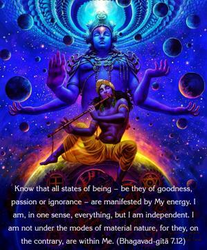
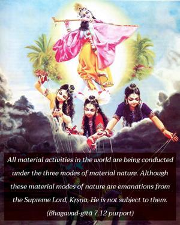
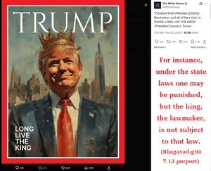

Know that all states of being – be they of goodness, passion or ignorance – are manifested by My energy. I am, in one sense, everything, but I am independent. I am not under the modes of material nature, for they, on the contrary, are within Me.



All material activities in the world are being conducted under the three modes of material nature. Although these material modes of nature are emanations from the Supreme Lord, Kṛṣṇa, He is not subject to them. For instance, under the state laws one may be punished, but the king, the lawmaker, is not subject to that law. Similarly, all the modes of material nature – goodness, passion and ignorance – are emanations from the Supreme Lord, Kṛṣṇa, but Kṛṣṇa is not subject to material nature. Therefore He is nirguṇa, which means that these guṇas, or modes, although issuing from Him, do not affect Him. That is one of the special characteristics of Bhagavān, or the Supreme Personality of Godhead.